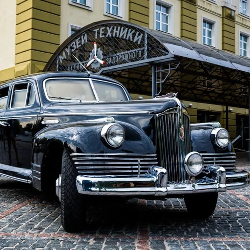

Интеллектуальный
лекторий
об ИИ
Первый в Москве регулярный публичный лекторий об искусственном интеллекте. Приходите послушать и обсудить, как ИИ меняет повседневную жизнь, работу и город, — вместе с людьми, которые в этом разбираются.
Разговор об ИИ,
на который стоит прийти
Что это
Городская площадка для открытого разговора об искусственном интеллекте. На встречах выступают ведущие специалисты по ИИ: исследователи, инженеры и практики из технологических компаний, университетов и индустрии — и говорят простым языком, без профессионального жаргона.
В Москве регулярно проходят технологические конференции и разовые образовательные мероприятия, но постоянного места, где можно спокойно и системно разбираться в теме ИИ вместе с экспертами, до сих пор не было.
Зачем приходить
Чтобы уйти с понятным ответом на вопрос «а что это значит для меня». Мы соединяем науку и бизнес, технологии и гуманитарное мышление, экспертов и любопытную аудиторию — и делаем искусственный интеллект понятным, обсуждаемым и осмысленным для всех, кто пришёл.

Поговорим о технологиях,
которые меняют мир.
Если вам близки глубокие разговоры о важном
По интонации и интеллектуальному подходу лекторий близок к таким проектам, как «ПостНаука», Arzamas, TED, «Армен и Фёдор» и другим современным просветительским платформам, работающим на стыке науки, культуры и общества.
А если вспомнить более давнюю историю — атмосферой лекторий похож на московские интеллектуальные клубы конца 1990-х — начала 2000-х, в частности «Проект О.Г.И.»: живое место встреч исследователей, авторов, предпринимателей и просто любопытных горожан, где регулярно проходили публичные разговоры, литературные чтения, лекции и дискуссии.
Кстати, это не просто похожая атмосфера: офлайн-встречи лектория проходят на площадках Дмитрия Ицковича — того самого, кто создал «Проект О.Г.И.». Это другой проект и другая тема, но в этом есть настоящая связь времён — мы продолжаем то самое ощущение города и разговора, которое он создавал двадцать лет назад.
Для тех, кто хочет наконец
разобраться в ИИ
Не курс и не конференция — регулярные встречи, где можно спокойно расспросить экспертов и обсудить это с другими.
* На старте лекторий ориентирован на массовую аудиторию. Отдельное направление для бизнеса планируется на этапе масштабирования.
Как устроена встреча
Выступление
Одно выступление, около часа.
Дискуссия
Дискуссия и вопросы из зала.
Общение
Живое общение и нетворкинг.
Офлайн


Встречи проходят в рюмочных «Зинзивер» (Покровский бульвар) и «Дежурная рюмочная» (Новый Арбат), а также в Музее техники Вадима Задорожного в Архангельском.
Рюмочные принадлежат Дмитрию Ицковичу — издателю, продюсеру, основателю «Полит.ру» и издательства ОГИ, автору культовых проектов «Проект О.Г.И.» и «Билингва». У площадок 30 тыс. подписчиков в соцсетях.
Онлайн
Практические мастер-классы проходят в «Яндекс Телемосте» — без установки приложений и предварительной регистрации.
Формат подходит для практических воркшопов, где участники проходят путь от идеи до рабочего результата вместе со спикером.
Встречи фиксируются, а материалы публикуются в открытом архиве лектория.
Что уже было
«Бессмертие цифровых двойников»

«Человеческая память по природе несовершенна: мы забываем, искажаем, переписываем прошлое, часто бессознательно, чтобы сохранить психический комфорт. Цифровой аватар, напротив, потенциально способен помнить всё». — из выступления Константина Воронцова


«Claude Code для непрограммистов»

Практический мастер-класс: участники прошли путь от идеи до рабочего прототипа и разобрались, как собрать простой инструмент под свою задачу без навыков программирования. Формат — воркшоп с символическим взносом за участие.
По итогам встречи участники получили готовую PDF-инструкцию «Как работать с Claude Code» — установка без бана аккаунта, разбор плагина feature-dev и чек-лист перед каждым запуском.

Заходите из настоящего — поговорить о будущем.
«ИИ без иллюзий: негативизм, завышенные ожидания и реальность крупного энтерпрайза»

Взгляд изнутри большой индустриальной компании на применение ИИ: что происходит в «кровавом энтерпрайзе», где нет хайпа, а есть процессы, бюджеты, безопасность и ответственность. Дата уточняется.
«Как ИИ делает автомобили безопаснее и удобнее»

Один из сюжетов встречи — беспилотный трамвай, который уже курсирует в Строгино: как устроена система, что изменилось с запуском и куда движется проект. Формат — интервью или выступление (около часа) с дискуссией, рассчитанное на широкую аудиторию.
Встреча пройдёт в Музее техники Вадима Задорожного в Архангельском — среди коллекции ретроавтомобилей и исторической техники, где тема транспорта звучит особенно уместно. Спикер и дата уточняются.

Билеты
Дата и тема ближайшей встречи уточняются — напишите, и мы пришлём анонс, как только он будет готов.
Станьте партнёром лектория об ИИ
Расскажите, как вам было бы интересно участвовать — университету, компании, медиа или культурной площадке. Организация полностью на моей стороне: вам не придётся тратить на это много времени или ресурсов.
Как вы можете участвовать
- Делегировать своих спикеров и экспертов для участия во встречах и дискуссиях
- Вместе с нами формировать темы выступлений и публичных разговоров
- При возможности предоставить площадку для проведения отдельных встреч или спецвыпусков
- Рассказать о проекте в своих каналах и медиа
- Участвовать в совместных публикациях, образовательных и просветительских инициативах
Формат участия гибкий: вы можете подключиться на постоянной основе или к отдельным событиям и темам.
Что это даёт вам
- Участвовать в формировании публичной повестки об искусственном интеллекте
- Укреплять позицию интеллектуального лидера отрасли
- Вести спокойный экспертный разговор без рекламного давления
- Получать доступ к думающей городской и профессиональной аудитории
- Присутствовать в новой культурной и образовательной городской площадке
- Расширять медиаприсутствие через научно-популярные коллаборации, лекции и публикации
Варианты участия
Площадка
Предоставить собственную площадку для лектория или спонсировать аренду площадки, которую подберу я.
Продвижение
Профинансировать маркетинг и рекламу лектория, а также покрыть другие операционные расходы проекта.
Экспертиза
Предоставить спикеров для выступлений и площадки для анонсов событий в своих каналах и медиа.
Что беру на себя я
- Разрабатываю концепцию и формат встреч
- Формирую темы выступлений в сотрудничестве со спикерами
- Готовлю анонсы и информационные тексты
- Обеспечиваю маркетинг и продвижение мероприятий
- Организую продажу билетов и взаимодействие с аудиторией
- Занимаюсь поиском и координацией площадок
- Модерирую встречи и веду программу
- Организую фото- и видеодокументацию мероприятий
- Веду социальные сети и обеспечиваю освещение после событий
- Создаю архив лекций и материалов
- Работаю со СМИ и медийными партнёрами
- Ищу новых партнёров и возможности для коллабораций
Вы участвуете в проекте как интеллектуальный партнёр и эксперт, получая репутационный и коммуникационный эффект — не вовлекаясь в операционное управление и организационные процессы.

Расскажите о том, что вас сейчас занимает в теме ИИ
Организация полностью на стороне лектория: анонс, площадка, запись, модерация — вам нужно только подготовить выступление.
Формат
Офлайн-лекция (около часа) с дискуссией и живым общением — или практический онлайн-мастер-класс, где от идеи доходят до рабочего прототипа. Встречи фиксируются, а материалы публикуются в открытом архиве лектория.
Что это даёт вам
- PR и охват: анонсы и отчёты выходят на площадках с 30 тыс. подписчиков, видеозапись расширяет охват далеко за пределы вечера
- Позиционирование как эксперта и лидера мнения в теме ИИ — без рекламного тона, в формате содержательного разговора
- Доступ к думающей городской аудитории и профессиональному сообществу вокруг ИИ
- Нетворкинг с другими спикерами, исследователями и предпринимателями, которые применяют ИИ на практике
Юлия Репринцева

Основательница и продюсер лектория — редактор и продюсер образовательных и медийных проектов, более 20 лет в медиа.
Фокус на искусственном интеллекте
С начала 2025 года ведёт авторский канал об ИИ и курс для новичков: лекции, мастер-классы и практические занятия. Среди учеников были vip-персоны, в частности, CEO банка из топ-3, а также целые команды, например сотрудники одной из самых заметных институций современного искусства в России.
Организует встречи и участвует в проектах. В качестве исследовательского партнёра вела исследование для дизайнера, которого с 2008 года характеризуют как самого востребованного шрифтового дизайнера России — аналитика инициативной группы, предложившей знак рубля, автора культовой «Книги про буквы от Аа до Яя» (выдержала 4 издания). Его шрифты встречаются повсеместно — в айдентике Сбера, Альфа-Банка, ВкусВилла, Wildberries, Bosco, «Ростелекома» и других крупных российских брендов, на картах, вывесках, упаковках.
Бэкграунд
В Воронеже работала в дирекции Международного Платоновского фестиваля искусств, координировала литературное направление и организовала вторую в истории города книжную ярмарку — от разработки концепции и поиска площадки до переговоров с администрацией города и бизнес-партнёрами. В рамках фестиваля организовала встречи с писателями и художниками, среди которых Павел Басинский, Вера Павлова, Евгений Гришковец и другие.
В Москве была арт-директором интеллектуального клуба «Мастерская диалога», где полностью продюсировала публичные вечера с писателями, историками, политиками и представителями бизнеса. Среди участников встреч — Наталья Громова, Александр Иличевский, Марк Розовский, Павел Палажченко и другие.
Открыта к знакомству — с университетами, компаниями, медиа и культурными площадками
Напишите, что вас интересует, — обсудим формат участия, партнёрские роли или совместное мероприятие. А если просто хотите прийти на встречу, тоже пишите, буду рада.